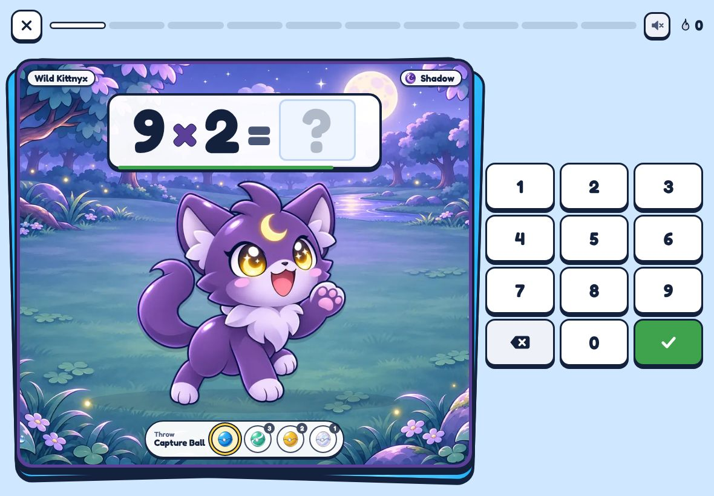
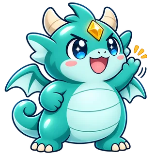

A free times tables game for kids. Here is everything a family needs to start, and a one-page letter you can print.
The short version
Free. No ads. No sign-up.
No chat, no leaderboards, and no way for kids to contact each other.
Progress stays on your device.
Works on iPad, iPhone, Android, Chromebook and computers, even offline.
Scan to play
brwilliams88.github.io/kaimon-multiply/?ref=class
Point a phone or tablet camera at the code, then tap the link that pops up. Or send the link to other families.
Make a class code (optional)
A class code goes into the link so we can count how many players came from your class. It's only a tag. It doesn't say who anyone is. Use a made-up word or a room number, never a name.
Letters and numbers only, up to 12. The QR code, link and letter update as you type.
What it is

Kids answer times tables cards to catch friendly creatures called Kaimon, earn a badge from each times table's Gym Leader, and win battles where every move is an answer. Most of the time is real practice.
Made by a parent, for kids learning their times tables.
Put it on the Home Screen
Open the link: scan the code, or tap a link someone sent you.
iPad or iPhone: in Safari, tap Share, then Add to Home Screen. Android or Chromebook: in Chrome, tap Install.
Open Kaimon from the Home Screen, tap Start and make a trainer. A first name or nickname is plenty.
Your child's progress is saved on your device. No account needed.
Kids can't chat, see other players or send anything to each other.
The game sends simple counts, like rounds and minutes played, the kind of device and a rough city, so the maker can see what's working. Never emails, real names or photos. A grown-up can turn this off in Grown-ups, on the Help tab.
Family sync is optional, and only links one family's own devices.
This is a small beta, so every note helps. What works, what doesn't, what your kid loves.
Print a letter for families
One page with the QR code, how to start and the privacy basics. Black and white is fine.

Kaimon Multiply
A free times tables game for kids
Dear families,
A few classmates are trying a new times tables game, and your child is invited. In Kaimon Multiply, kids answer times tables cards to catch friendly creatures, earn badges and win battles where every move is an answer. A few minutes a day adds up to real practice.
How to start
Scan the code with a phone or tablet camera, or type the link.
Add it to the Home Screen. iPad and iPhone: in Safari, tap Share, then Add to Home Screen. Android and Chromebook: in Chrome, tap Install.
Tap Start and make a trainer. A first name or nickname is plenty.
Good to know
Free, with no ads and no sign-up.
No chat, no leaderboards, and no way for kids to contact each other.
Progress stays on your device. It works offline once it's on the Home Screen.
Works on iPad, iPhone, Android, Chromebook and computers.
The game counts simple things, like rounds played and a rough city, to see what's working. Never emails, real names or photos. A grown-up can turn this off in Grown-ups.
Scan to playbrwilliams88.github.io/kaimon-multiply